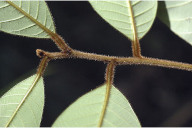
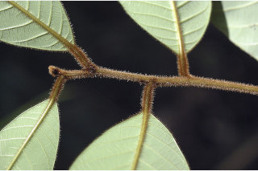
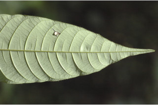
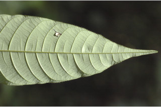

Small trees, up to 5 m tall.
ಚಿಕ್ಕಗಾತ್ರದಲ್ಲಿರುವ ಈ ಮರಗಳು 5 ಮೀ ಎತ್ತರದವರೆಗೂ ಬೆಳೆಯುತ್ತವೆ.
5 മീറ്റര് വരെ ഉയരത്തില് വളരുന്ന ചെറുമരങ്ങള്.
சிறிய மரம், 5 மீ. உயரம் வரை வளரக்கூடியது.
Branchlets slender, rusty pubescent.
ಕಿರುಕೊಂಬೆಗಳು ತೆಳುವಾಗಿದ್ದು ಕಿಲುಬು ಬಣ್ಣದ ಮೃದು ತುಪ್ಪಳದಿಂದ ಆವೃತವಾಗಿರುತ್ತವೆ.
തുരുമ്പന് രോമിലമായ നേര്ത്ത ഉപശാഖകള്.
சிறிய நுனிக்கிளைகள் மெலிதாகவும், பொன் நிறமான உரோமங்களுடன் காணப்படும்.
Leaves simple, alternate, spiral; petiole 0.5-1.5 cm long; pubescent, canaliculate; lamina 7-22 x 2-5 cm elliptic-oblong to oblanceolate, apex long acuminate to caudate, base acute, margin undulate and ciliate, chartaceous, glaucous beneath; midrib flat or thinly raised above; secondary_nerves 20-30 pairs, prominent, nearly parallel; tertiary_nerves percurrent.
ಎಲೆಗಳು ಸರಳವಾಗಿದ್ದು, ಪರ್ಯಾಯ ಸುತ್ತು ಜೋಡನಾ ವ್ಯವಸ್ಥೆಯಲ್ಲಿರುತ್ತವೆ. ಎಲೆ ತೊಟ್ಟುಗಳು 0.5 ರಿಂದ 1.5ಸೆ.ಮೀ. ಉದ್ದವಿದ್ದು ಕಾಲುವೆಯಾಕಾರದ ಗೆರೆ ಹೊಂದಿದ್ದು, ಮೃದು ತುಪ್ಪಳದಿಂದ ಕೂಡಿರುತ್ತವೆ. ಎಲೆ ಪತ್ರ 1-22 × 2-5 ಸೆ.ಮೀ. ಗಾತ್ರ, ಅಂಡವೃತ್ತ – ದೀರ್ಘ ಚತುರಸ್ರಾಕಾರದಿಂದ ಬುಗುರಿ-ಈಟಿ ಸಮ್ಮಿಶ್ರದ ಆಕಾರ ಹೊಂದಿದ್ದು ಕ್ರಮೇಣವಾಗಿ ಚೂಪಾಗುವದರಿಂದ ಹಿಡಿದು ಬಾಲರೂಪದ ತುದಿ, ಹಾಗೂ ಚೂಪಾದ ಬುಡವನ್ನೊಳಂಡಿರುತ್ತದೆ; ಅಂಚು ಅಲೆಯಾಕಾರದಲ್ಲಿದ್ದು, ಸ್ಪಂದನಾಶೀಲ ಕೂದಲುಗಳನ್ನು ಹೊಂದಿರುತ್ತದೆ. ಪತ್ರ ತೊಗಲಿನಂತಹ, ಮೇಲ್ಮೈ ಹೊಂದಿದ್ದು, ತಳಭಾಗ ಬೂದು ಹಸಿರಾಗಿರುತ್ತದೆ. ಮಧ್ಯನಾಳ ಚಪ್ಪಟೆಯಾಗಿ ಅಥವಾ ತೆಳುವಾಗಿ ಉಬ್ಬಿರುತ್ತದೆ. ಎರಡನೇ ದರ್ಜೆಯ ನಾಳಗಳು 20-30 ಜೋಡಿಗಳಿದ್ದು, ಎದ್ದು ಕಾಣುವಂತಹವುಗಳಾಗಿದ್ದು ಬಹುಪಾಲು ಸಮಾಂತರದಲ್ಲಿರುತ್ತವೆ; ತೃತೀಯ ದರ್ಜೆಯ ನಾಳಗಳು ಎಲೆದಿಂಡಿಗೆ ಅಡ್ಡವಾಗಿ ಕೂಡುತ್ತವೆ.
ഇലകള് ലഘുവും, വര്ത്തുളമായി, ഏകാന്തരക്രമത്തില്, ഇലഞെട്ടുകള് 0.5 മുതല് 1.5 സെ.മീ. വരെ നീളമുള്ള രോമിലമായതും, ചാലോട് കൂടിയതുമാണ്; പത്രഫലകത്തിന് 7 മുതല് 22 സെ.മീ. വരെ നീളവും 2 മുതല് 5 സെ.മീ. വരെ വീതിയും ദീര്ഘവൃത്തീയ-ആയതാകാരം മുതല് അപകുന്താകാരം വരെ, പത്രാഗ്രം നീളമേറിയ ദീര്ഘാഗ്രമോ വാലോട് കൂടിയതോ ആണ്, പത്രാധാരം നിശിതമാണ്, അരികുകള് തരംഗിതവും രോമങ്ങളോടുകൂടിയതുമാണ്. കടലാസുപോലത്തെ പ്രകൃതം, കീഴ്ഭാഗത്ത് നീലരാശി കലര്ന്ന നരച്ചനിറം; മുഖ്യസിര മുകള്ഭാഗത്ത് പരന്നോ, ചെറുതായി ഉയര്ന്നോ കാണപ്പെടുന്നു; ഏതാണ്ട് സമാന്തരമായ, 20 മുതല് 30 വരെ ജോഡി പ്രമുഖമായ ദ്രിതീയ ഞരമ്പുകള്; ത്രിതീയ ഞരമ്പുകള് പെര്കറന്റ് ആണ്.
இலைகள் தனித்தவை, மாற்றுஅடுக்கமானவை, சுழல் போன்று அமைந்தவை; இலைக்காம்பு 0.5-1.5 செ.மீ. நீளமுடையது, உரோமங்களுடையது, குறுக்குவெட்டுத் தோற்றத்தில் கேனாலிகுலேட்; இலை அலகு 7-22 X 2-5 செ.மீ., நீள்வட்ட-நீள்சதுரம் முதல் தலைகீழ் ஈட்டி வடிவம்,அலகின் நுனி நீண்டு அதிக்கூரியது முதல் வால் போன்றது, அலகின் தளம் கூரியது, அலகின் விளிம்பு அலைப்போன்றது, உரோமங்களுடன் காணப்படும். சார்ட்டேசியஸ்; கீழ்பரப்பில் மெழுகு பூசினாற் போல் பச்சை கலந்த வெண்மை நிறம்; மையநரம்பு மேற்புறத்தில் அலகின் பரப்பிற்கு சமமானது அல்லது சிறிது உயர்ந்து காணப்படும், இரண்டாம் நிலை நரம்புகள் 2-30 ஜோடிகள், மூன்றாம் நிலை நரம்புகள் பெர்க்கரண்ட்.
Inflorescence axillary or extra-axillary racemes, 1 cm long; flowers white, polygamous.
ಪುಷ್ಪಮಂಜರಿ ಅಕ್ಷಾ ಕಂಕುಳಿನಲ್ಲಿ ಅಥವಾ ಅಗ್ರ-ಅಕ್ಷಾಕಂಕುಳಿನಲ್ಲಿರುವ ಅನಿಯತ ಮಧ್ಯಾಭಿಸರ ಮಾದರಿಯಲ್ಲಿದ್ದು ಸಂಕೀರ್ಣಲಿಂಗಿಯಾದ ಬಿಳಿಬಣ್ಣದ ಹೂಗಳನ್ನು ಹೊಂದಿರುತ್ತವೆ.
പൂങ്കുലകള് കക്ഷീയമോ കക്ഷങ്ങള്ക്ക് മുകളിലായോ, 1 സെ.മീ. നീളമുള്ള റസീമുകള്; പൂക്കള് വെളുത്ത നിറത്തില് ബഹുലിംഗികളാണ്.
ரெசீம் மஞ்சரி இலைக்கோணங்களில் அல்லது சற்று மேலே அமைந்தது, 1 செ.மீ. நீளமுடையது, மலர்கள் வெள்ளை நிறம், மலர்கள் ஒர்பாலானவை மற்றும் இருபாலானவை கலந்தவை (பாலிகேமஸ்).
Drupe oblate, ribbed, glabrous, 0.5 cm across, 1-seeded
ಕಾಯಿಗಳು ಡ್ರೂಪ್ ಮಾದರಿಯವು. ಆಕಾರದಲ್ಲಿ ಧೃವ-ಚಪ್ಪಟೆಯಾಗಿದ್ದು ಉಬ್ಬು-ತಗ್ಗು ಗೆರೆಗಳನ್ನೊಳಗೊಂಡ ಮೇಲ್ಮೈ ಹಾಗೂ ಒಂದು ಬೀಜಗಳನ್ನೊಳಗೊಂಡಿದ್ದು, 1 ಸೆ.ಮೀ. ಉದ್ದವಿದ್ದು ರೋಮ ರಹಿತವಾಗಿರುತ್ತವೆ.
കായ ഒറ്റവിത്തുള്ളതും, 0.5 സെ.മീ. കുറുകേയുമുള്ള അരോമിലവും വരമ്പുകളുള്ളതുമായ അഭ്രകം.
உள்ளோட்டுத்தசைகனி (ட்ரூப்), அழுத்தப்பட்ட கோள வடிவமானது, வரிப்பள்ளங்கள் காணப்படும், உரோமங்களற்றது, 0.5 செ.மீ. குறுக்களவு ஒரு விதை காணப்படும்.
 


 
